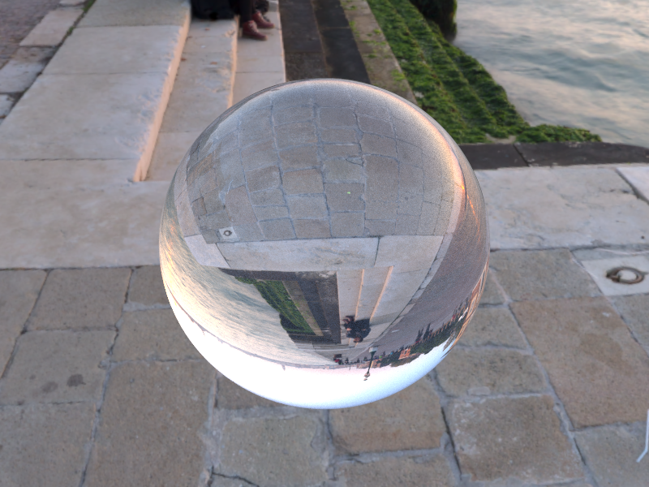
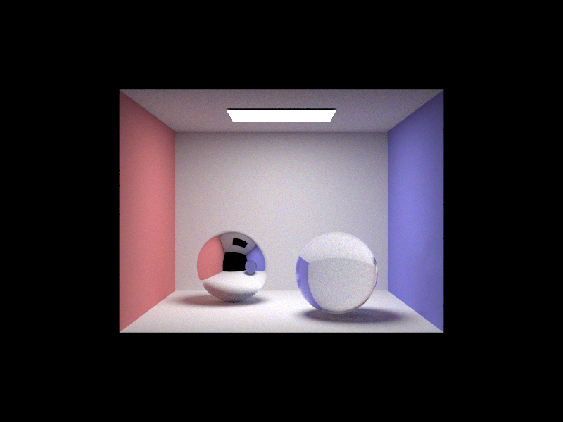
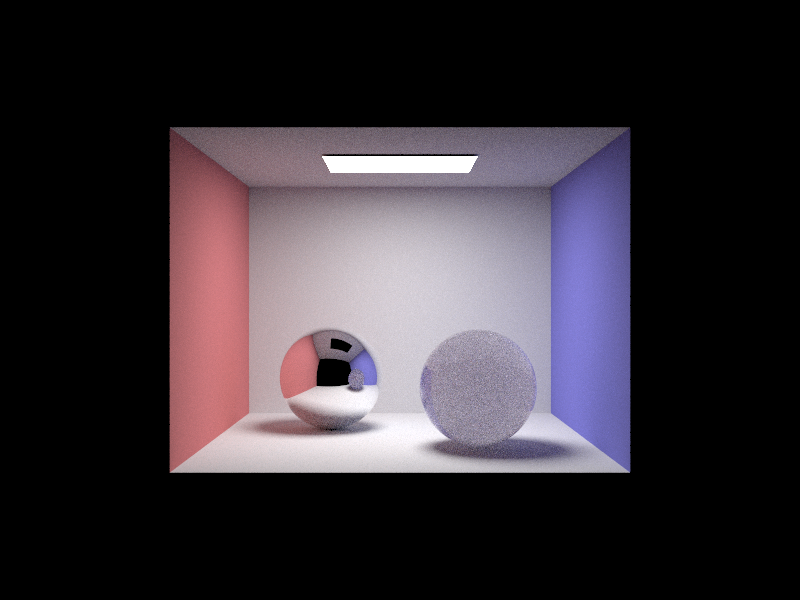
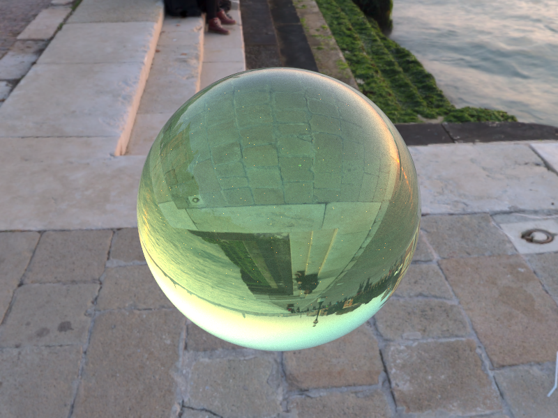
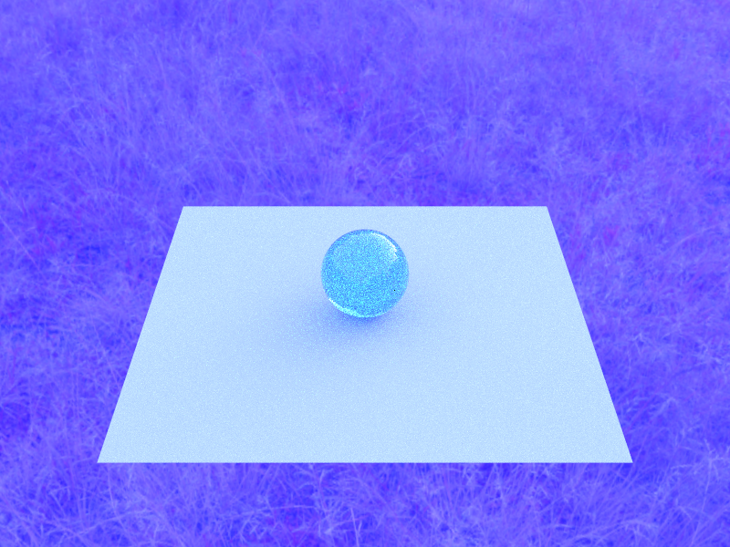
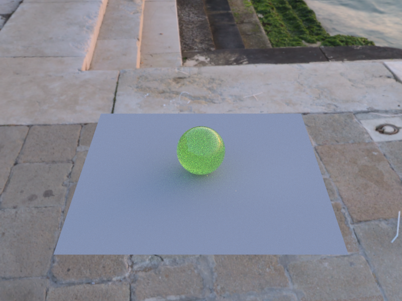
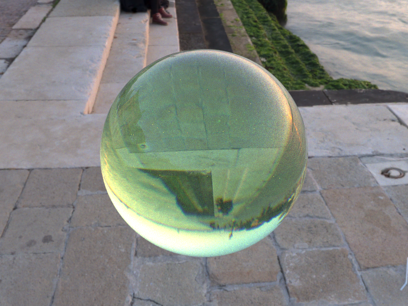

CS184 Final Project Report — Spring 2026
Slimelight
Physically based rendering of translucent slime using random-walk subsurface scattering, hero-wavelength spectral dispersion, and importance-sampled HDR environment lighting.
Abstract
We extended the CS184 Project 3-2 Monte Carlo path tracer to render a physically accurate, cinematic translucent slime. The work comprises three major rendering systems added on top of the existing glass BSDF infrastructure: a homogeneous random-walk subsurface scattering (SSS) medium with Henyey–Greenstein importance sampling; hero-wavelength spectral path tracing with Sellmeier/Cauchy dispersive dielectrics and Gaussian RGB sensor response curves; and HDR equirectangular environment lighting with a two-dimensional CDF importance-sampling table. Multiple importance sampling (MIS) with the power heuristic ties all three systems together at the direct-lighting step. We validated each feature independently with ablation renders, tuned the material parameters until the sphere read convincingly as slime, and produced a 23-frame animated sequence from Blender fluid-simulation geometry. The final renders show clearly how each layer—scattering body, spectral fringing, and photographic environment—contributes to the slime aesthetic.
Technical Approach
1 Homogeneous Random-Walk Subsurface Scattering
We modelled the slime volume as a homogeneous participating medium
defined by three per-channel parameters exported from the scene file:
absorption sigma_a, scattering sigma_s, and
the Henyey–Greenstein anisotropy parameter phase_g.
When a refracted ray enters the medium (detected by w_in.z < 0
in the BSDF shading frame and a non-null medium_inside
pointer on the BSDF), the path tracer switches to a random-walk loop
of up to 32 bounces. At each step:
-
A free-flight distance is sampled from the exponential distribution
implied by the mean extinction coefficient
σt,mean = (σt,R+σt,G+σt,B) / 3. -
Beer–Lambert transmittance
T(t) = exp(−σt t)is applied per RGB channel to weight the contribution. - If the sampled point lies inside the geometry a new scattering direction is drawn from the Henyey–Greenstein phase function (importance sampled via CDF inversion); otherwise the walk exits the medium and normal surface shading resumes.
The HG CDF inversion draws
cosθ = −(1+g²−((1−g²)/(1+g−2gξ))²) / (2g)
and maps the direction into world space through a make_coord_space
frame built around the current direction wo.
A toggle flag (enable_sss, CLI flag -N, GUI
checkbox) lets us disable the random walk for comparison renders while
keeping the glass BSDF active.


2 Hero-Wavelength Spectral Sampling & Dispersion
Standard RGB path tracing cannot model chromatic dispersion because it treats the three channels as independent. We implemented the hero-wavelength spectral sampling scheme of Wilkie et al. 2014: each camera ray is assigned a single wavelength λ drawn uniformly from [380, 720] nm. All refraction events along the path use the wavelength-dependent IOR for that ray, so a single wavelength traces a consistent chromatic path through the dielectric.
The wavelength is propagated on the ray struct (r.spectral,
r.wavelength_nm) and inherited by every child ray. At the
camera, the scalar radiance estimate is converted back to RGB by
evaluating Gaussian sensor response curves centred at 610 nm (R),
545 nm (G), and 460 nm (B) and normalizing by their
in-band averages:
The IOR at each wavelength is computed with either the Sellmeier equation
(three-term, using material-specific B and C vectors)
or the Cauchy approximation n(λ) = a + b/λ²
as a simpler fallback. The scene file exposes a per-object
dispersion parameter (Cauchy B coefficient) that controls
how strongly colours separate on refraction.


3 HDR Environment Lighting with Importance Sampling
We added an EXR/HDR environment-map loader and replaced the trivial
uniform-direction sampler with a two-dimensional CDF table. At
initialization, each pixel’s luminance is multiplied by
sin(θ) (the solid-angle correction for equirectangular
projection) to build a row-marginal CDF. To sample a direction:
- Binary-search the marginal CDF with ξ1 → row index.
- Binary-search that row’s conditional CDF with ξ2 → column index.
- Add a sub-pixel jitter, convert to spherical coordinates, then to world direction.
The PDF for a sampled direction is
penv(dir) = luminance[row,col] / (Σ luminance × sinθ) × 1/dΩpixel.
A bilinear interpolation helper (bilerp) wraps the map at
the ±π seam so no visible crease appears.
Multiple importance sampling combines environment samples
(weighted by env PDF) with BSDF samples (weighted by BSDF PDF) using
the power heuristic w = a²/(a²+b²).
This is particularly important for the slime material because the glass
BSDF has a narrow specular lobe while the environment map has bright
areas far from that lobe.



4 Problems Encountered
SSS visually identical to glass
Early renders with the random walk enabled looked identical to plain glass.
We added atomic debug counters to confirm that the walk was actually
firing ([SSS] random walk triggered). The real cause was that
sigma_s = 0.05 gives a mean free path of
1/σt ≈ 10 units—far larger than
the sphere’s diameter of 1.6 units, so almost no scattering
events occurred inside the geometry. Increasing to
sigma_s = 2.0–3.0 brings the mean free path to
~0.3 units (roughly 5 mean free paths across the sphere) and
produces strong, clearly visible SSS.
High variance with all features combined
Enabling SSS, spectral sampling, and HDRI simultaneously multiplied
variance. We addressed this by tuning the phase-function anisotropy
(g = 0.7 forward-scattering reduces path-length variance
inside the medium) and by routing all non-SSS paths through the MIS
estimator so environment samples are combined optimally with glass BSDF
samples.
Spectral noise on SSS paths
When a spectral ray undergoes many SSS bounces its throughput becomes
very small for wavelengths that are heavily absorbed (sigma_a
channels), which produces high-variance fireflies in those channels.
We mitigated this with Russian roulette termination inside the random
walk and by capping the walk at 32 bounces.
Environment map seam
The bilinear interpolation in env_bilerp initially
produced a visible crease at the ±π longitude boundary.
We fixed this by wrapping the column index modulo the map width in the
interpolation helper so the seam is seamless.
Porting Blender geometry to the renderer
Getting Blender meshes into the renderer’s COLLADA format was one
of the most time-consuming parts of the project. Blender exports
COLLADA files that are technically valid but use conventions the
renderer does not handle: Z-up vs. Y-up coordinate systems,
non-identity bind matrices on instanced geometry, and material
bindings that reference effect IDs rather than the names the CGL
loader expects. We wrote a Python post-processing script
(obj_to_dae.py) to normalise the exports—rewriting
transforms, flipping axes, and injecting the CGL-specific
<extra> material tags needed to carry
sigma_a, sigma_s, and phase_g
into the renderer. Even then, normals on thin fluid sheets from the
Mantaflow simulation occasionally faced inward, requiring an
additional winding-order correction pass before the geometry
rendered correctly.
5 Lessons Learned
- Mean free path must be calibrated to scene scale. A physically plausible sigma_s for real-world centimetres can be almost invisible at renderer units of metres; always sanity-check mfp against object diameter before tuning colour.
- MIS is non-optional with environment lighting + specular BSDFs. Without it, BSDF sampling misses the bright environment regions and env-map sampling misses the narrow specular lobe. Together the variance was 10× lower than either strategy alone.
- Hero-wavelength spectral sampling is cheap relative to the effect. It adds zero extra rays; the only overhead is the IOR lookup and the sensor response multiply at the camera. Dispersion is essentially free if you are already doing spectral sampling.
- An open scene is necessary for SSS to look interesting. Inside a Cornell box, the slime body is backlit by a small area light. In an open outdoor HDRI scene, incident light wraps around the full hemisphere, which produces the multi-coloured, candy-like translucency the material was designed for.
- Fluid simulation animation exposed render bottlenecks. Rendering 23 frames at 512 spp took significant wall-clock time per frame; multi-threading and tile-based work queues were critical.
Results
Animated Sequence
A 23-frame animation exported from a Blender Mantaflow fluid simulation, rendered per-frame through our full pipeline (SSS + spectral + HDRI).
Slimelight animation — 23 frames, full pipeline (SSS + spectral dispersion + HDRI), rendered offline.
Ablation Study
The same slime mesh rendered under identical camera and lighting conditions with features progressively added. Each column isolates one contribution.


Material Variants
The same rendering pipeline, different medium parameters, showing the range
of translucent looks achievable by tuning sigma_a,
sigma_s, and phase_g.


Hero Renders

Progression: Week 1 → Final


References
- Pharr, M., Jakob, W., & Humphreys, G. (2023). Physically Based Rendering: From Theory to Implementation, 4th ed. MIT Press. Chapters 11 (Volumes), 4 (Spectral Rendering), 13 (Light Transport II).
- Wilkie, A., Nawaz, S., Droske, M., Weidlich, A., & Hanika, J. (2014). Hero Wavelength Spectral Sampling. Computer Graphics Forum 33(4), EGSR 2014.
- Henyey, L. G., & Greenstein, J. L. (1941). Diffuse radiation in the Galaxy. The Astrophysical Journal 93, 70–83.
- Veach, E. (1997). Robust Monte Carlo Methods for Light Transport Simulation. PhD thesis, Stanford University. (Multiple importance sampling, power heuristic.)
- Jensen, H. W., Marschner, S. R., Levoy, M., & Hanrahan, P. (2001). A Practical Model for Subsurface Light Transport. SIGGRAPH 2001.
- Polyhaven. Free CC0 HDR environment maps. polyhaven.com/hdris
- Asher Zhu. Real-time UE5 slime demo (creative inspiration). asher.gg/category/slime
Contributions
- Homogeneous medium class (
medium.h/cpp) - Random-walk radiance integration in pathtracer
- SSS enable/disable flag (CLI
-N, GUI checkbox) - Debugging sigma_s / mean-free-path calibration
- Hero-wavelength spectral infrastructure (
spectral.h) - Gaussian RGB sensor response curves
- Sellmeier & Cauchy dispersive IOR in glass/refraction BSDFs
- Week 1 and Week 2 comparison validation renders
- HDR environment map loader (EXR support)
- 2-D CDF importance-sampling table and
bilerp - Multiple importance sampling (power heuristic)
- Scene authoring and COLLADA DAE pipeline
- Blender Mantaflow fluid simulation
- OBJ→COLLADA batch conversion pipeline
- Animation rendering and video assembly
- Material parameter tuning and ablation grid renders